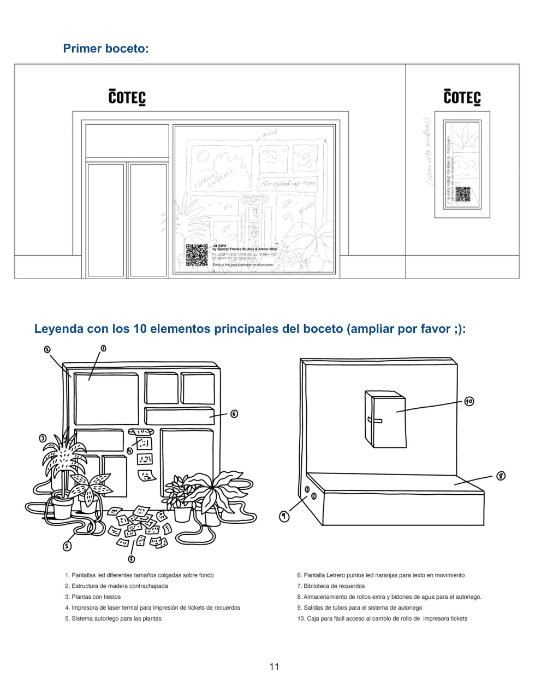
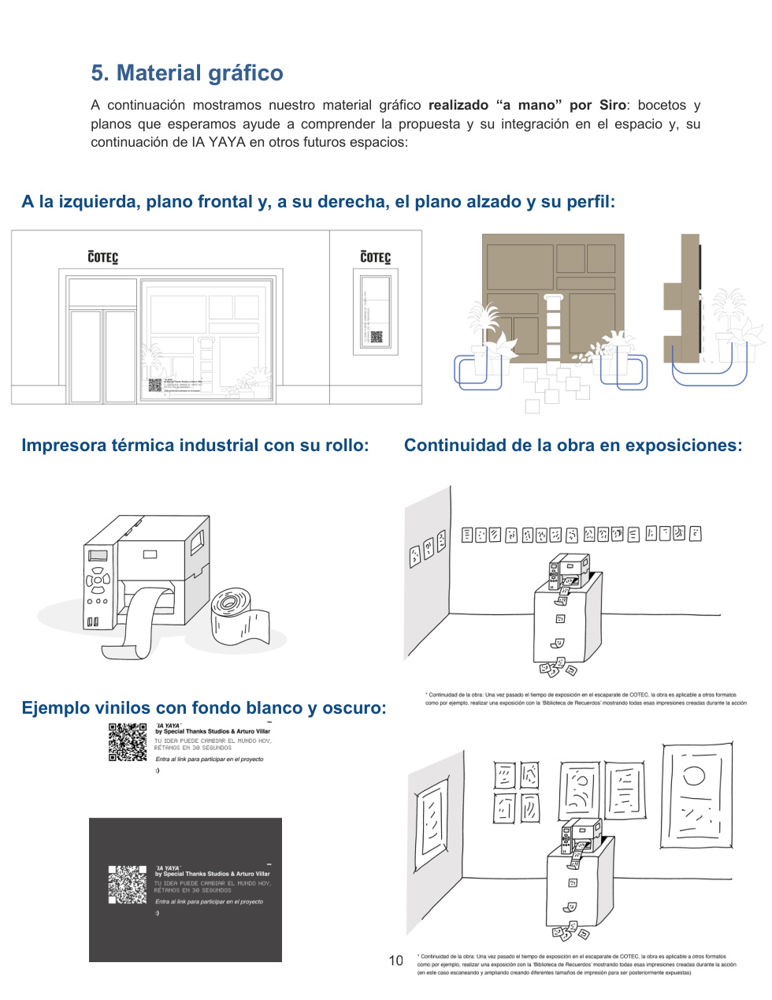
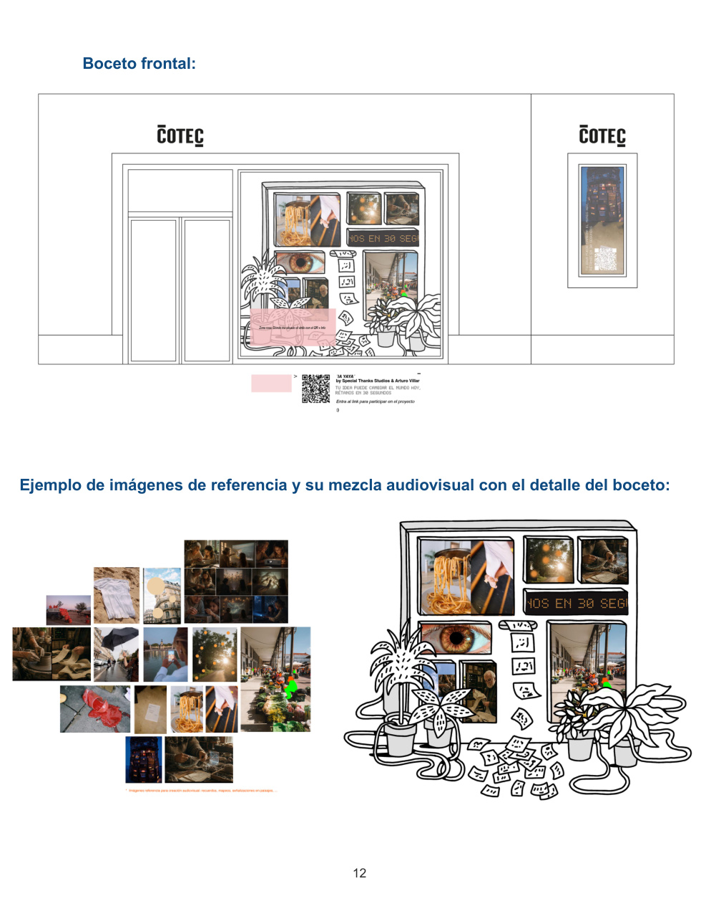

El escaparate del 0,01%
IA
YAYA
Hay algo que ninguna máquina puede calcular: lo que hacemos, recordamos y aprendemos unos de otros.
01 / EL 0,01%
El 99,9% puede medirse. El 0,01% se recuerda.
IA YAYA pone en valor ese pequeño porcentaje humano hecho de intuición, saberes intergeneracionales, afectos, cuidados y recuerdos compartidos.
02 / LA IDEA
La inteligencia artificial no para sustituir lo humano, sino para proteger y rescatar los saberes analógicos.
IA YAYA transforma un escaparate en un rincón para frenar el ritmo, respirar y recordar. La tecnología se disfraza de empatía y nostalgia cotidiana.

03 / LA EXPERIENCIA
De peatón a co-creador.
01Miras
02Te detienes
03Escaneas
04Recuerdas
05Compartes

04 / BIBLIOTECA DE RECUERDOS
Una biblioteca que crece en la calle.
Cada interacción puede convertirse en un pequeño objeto físico: un microtique que cae tras el cristal y se suma a una biblioteca de recuerdos en constante crecimiento.

05 / DEJA TU 0,01%
¿Qué sabes, recuerdas o haces que merece ser compartido?
06 / EL PROYECTO
KNOWCASE · Cotec + Sónar+D
IA YAYA: El escaparate del 0,01% es una instalación urbana e interactiva pensada para el espacio KNOWCASE de la Fundación Cotec en Madrid.